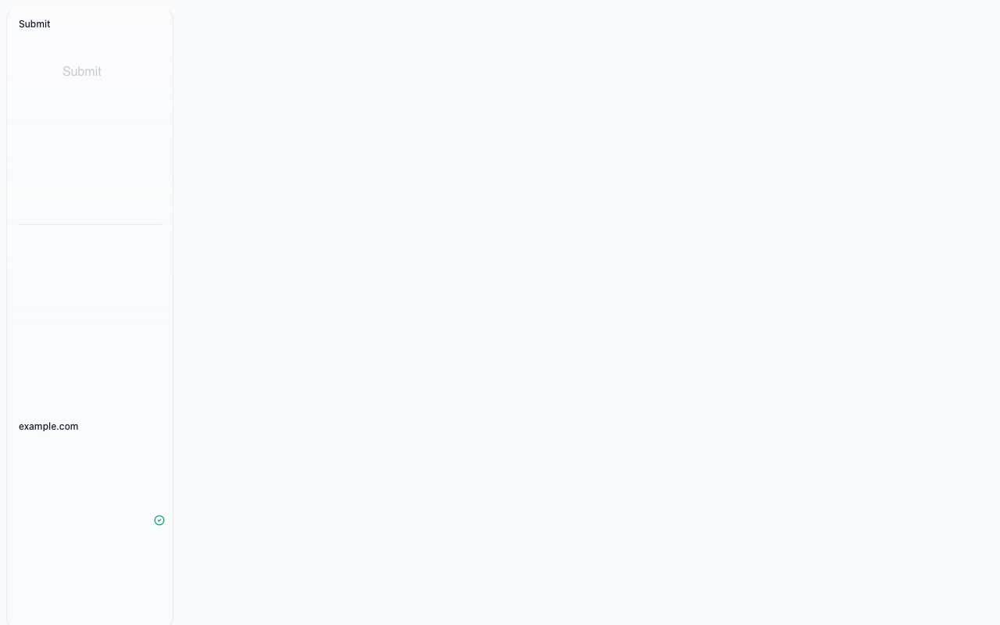
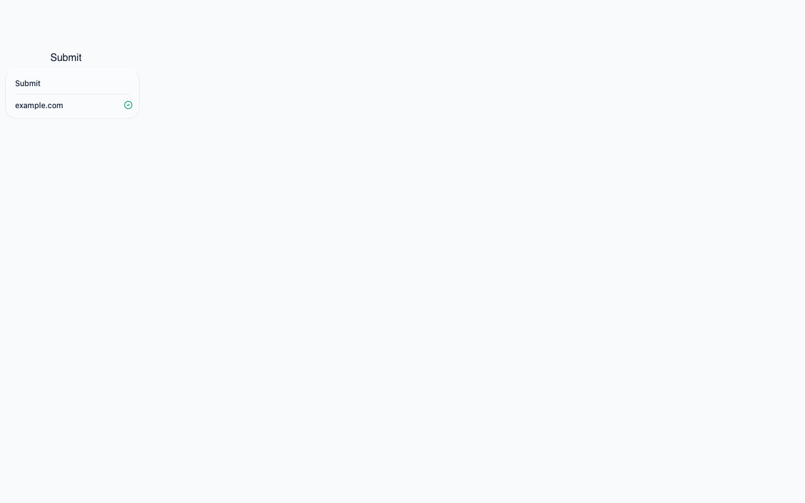
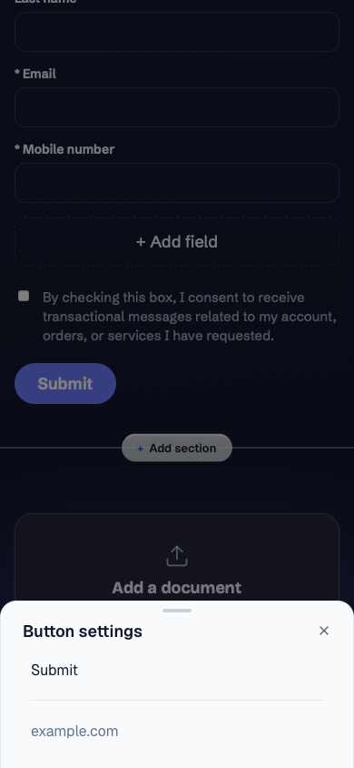

VERIFIED. Authenticated preview evidence and independent GPT-6 Astra confirmation pass. Initial cleanup failure resolved and independently rechecked.
Preview: PR 1478
Head: 06261465ff4e744136a1714411dc1d90637d9d30
2026-10-14
| Check | Result |
|---|---|
| Authenticated doctor and deploy SHA | Pass |
| Old WebKit build 2203 regression | Before: 799.98px; after: 79px in isolated real-component fixture |
| Full editor desktop | 79px in Chromium and old WebKit |
| Reopen and bottom-edge placement | Pass |
| Mobile sheet | 184px at 390 × 844; full editor passes |
| CI | Typecheck, test, build, preview smoke, password smoke, critical flow and e2e pass |
| Review | Independent Opus review clean; scoped security scan clean |
| Accepted warnings and limitations | WebKit engine testing, not physical Safari. T3 snapshots failed; independent browser screenshots used. Intermittent network timeouts cleared on retry. Simplified mobile Chromium fixture issue tracked separately as #1479; full-editor mobile passes. |
Real LinkSettingsCard and application CSS in a synthetic fixture, WebKit build 2203. These two images are isolated component evidence.


Seeded Journey Page, existing Submit settings. Mock data only.

Label and link edits persisted after reload in Chromium and WebKit. Real GET and PUT requests to the Journey Page API returned 200. The save API restored content but normalized metadata and advanced the draft revision. A guarded repair of this single preview seed row restored its original document, revision 1, timestamp and title from the unchanged publication. Independent authenticated re-fetch verifies cleanup. Publication was not changed.
Chromium had no console errors. Accepted WebKit warnings: an existing report-only CSP header lacks report-to; one ResizeObserver notification occurred during the run. No failed API responses or visible functional failures. This CSS change does not alter those paths.

